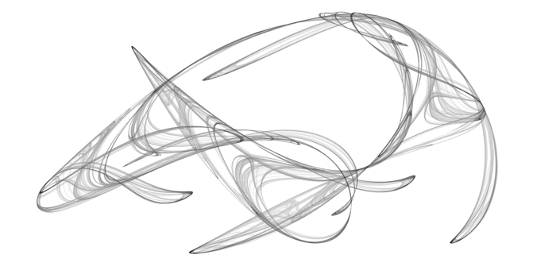
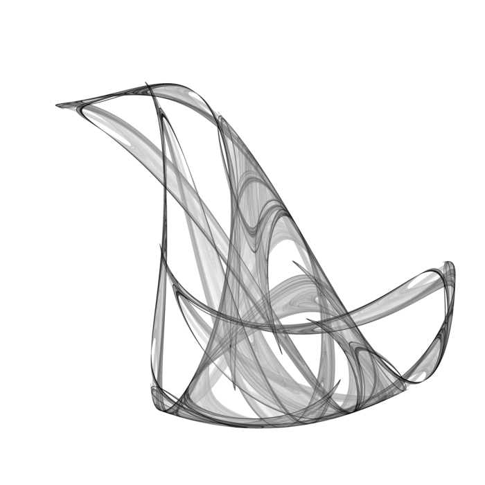
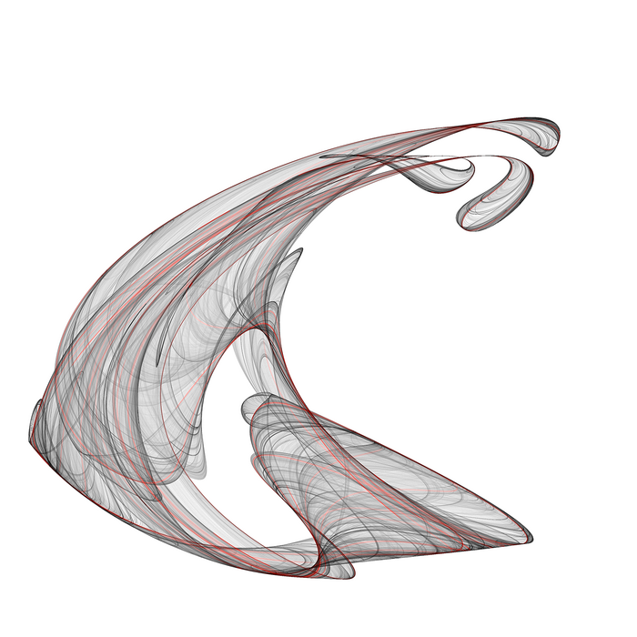

strange-attractor
Introduction
This program renders strange attractors. This just iterates some of the equations listed here http://local.wasp.uwa.edu.au/~pbourke/fractals/ and colors the image based on the density of points in that pixel.
Usage
If this is your input file
<fractal> Lx = 3.5 # physical size center_x = -0.40 # center center_y = -0.20 method = peter # fractal equation... a = 4.25 # ... and constants b = 1.56 c = -0.65 d = -1.75 <image> # image size (pixels) Nx = 4000 Ny = 3000 npts = 1e9 # samples to take cut = 60.0 # turn density into color exp = 0.4 file = new4.ppm <par_end>
You can run the program as
./strange_attractor.x -i input.frac
or, if you want to override certain options
./strange_attractor.x -i input.frac fractal/Lx=2 image/exp=0.25
Examples
  